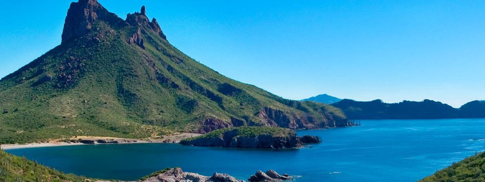
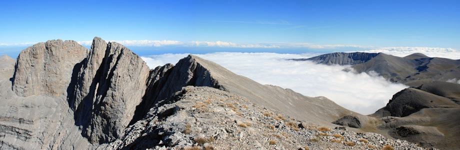

Vacaciones en Montaña
Lejos de las ruidosas aglomeraciones de los lugares turísticos y el estrés de la vida en la ciudad, unas vacaciones en la montaña te ofrecen una combinación inigualable de paz, serenidad y aventuras llenas de adrenalina. Tanto si estás buscando una escapada romántica, como un fin de semana de aventura o unas vacaciones llenas de actividades para la familia, tu chalet, cabaña o casa ideal se oculta en algún lugar de una idílica montaña o lago, esperando ser descubierta.
Unas vacaciones de aventura en las montañas con la familia son un modo perfecto de mantenerte a ti y a tu familia sanos y felices durante toda la escapada. Las aventuras al aire libre, desde montar en bici hasta la escalada ocupan los días, permitiéndote explorar tu destino de vacaciones en toda su extensión. Tanto si buscas unas vacaciones con actividades al aire libre como unas tranquilas vacaciones en un lago y en las montañas, en HomeAway se puede elegir entre una gran cantidad de fantásticas cabañas en la montaña.